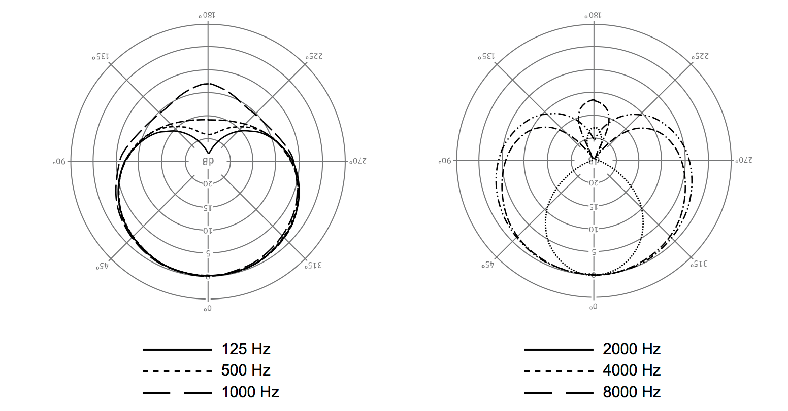
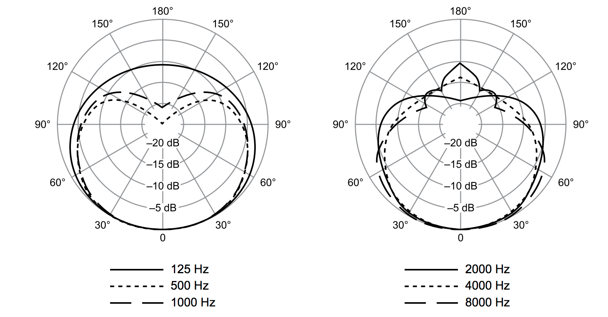
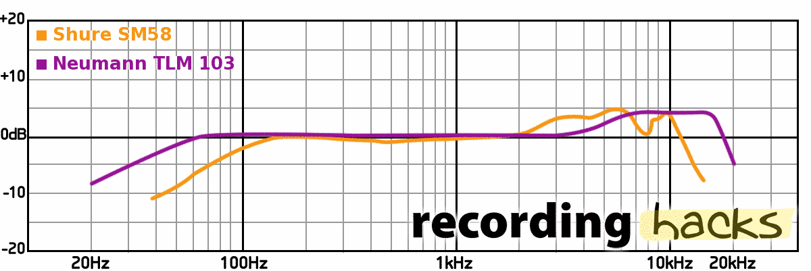
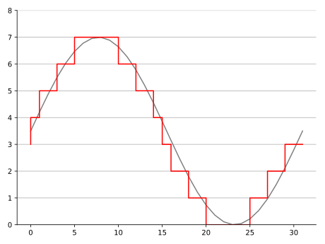
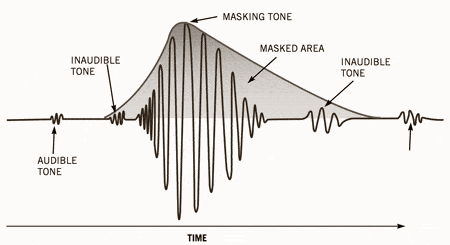

Audio Myths
Dispelling common misconceptions and misleading truths
Spring 2019 - Audio Tech Talk Series
February 19, 2019

Condenser microphones “pick up” more of the room than dynamic microphones
Neumann TLM 103
Condenser
Shure SM58
Dynamic
Polar Patterns

Neumann TLM 103
Condenser

Shure SM58
Dynamic
Frequnecy Response
Condensers “pick up” more of the room than dynamics
False
You can hear high-resolution audio
What is high-resolution audio?
Music files that have a higher sampling frequency and/or bit depth than that of Compact Disc Digital Audio, which is specified at 16bit/44.1 kHz.
From the high resolution audio page on Sony.com
From the high resolution audio page on Technics.com

Digital audio does not contain stairsteps
Criticism
"If they [the music business] cared about sound quality in the first place, they would make all of the releases sound great in every format they sell: MP3, FLAC, CD, iTunes, or LP." — cnet
"Impractical overkill that nobody can afford" — Gizmodo
"A solution to a problem that doesn't exist, a business model based on willful ignorance and scamming people." — Xiph.org
You can hear high-resolution audio
Mostly false
MP3 audio sounds bad
What is mp3 audio?
MP3 compression works by reducing (or approximating) the accuracy of certain components of sound that are considered to be beyond the hearing capabilities of most humans. This method is commonly referred to as perceptual coding or as psychoacoustic modeling.
Temporal Masking
Listening Examples
uncompressed WAVE - 2.5 MB
320 kbps MP3 - 563 KB [x4.4 factor] - Fs = 44.1 kHz
128 kbps MP3 - 225 KB [x11.1 factor] - Fs = 44.1 kHz
96 kbps MP3 - 169 KB [x14.8 factor] - Fs = 44.1 kHz
16 kbps MP3 - 29 KB [x86.2 factor] - Fs = 8 kHz
MP3 audio sounds bad
Mostly false
Power conditioners will
improve sound quality
Cables improve sound quality
How expensive could cables be?
Very
Moon Audio - Sliver Dragon XLR interconnect
$500
Cardas - Clear Beyond Speaker Cable
$6,840
Siltech Cables - Emperor Double Crown Speaker Cable
$45,000
Transmission Line Theory
'Short' vs. 'long' connections
Speed of light - 299,792,458 m/s
100 ft. (~30.5 m) audio cable - 101 ns propagation delay
20 kHz -> T = 50 μs and ~10,000 m wavelength in copper
"Cables connecting an audio amplifier to speakers would have to be over 1.55 miles in length before line reflections would significantly impact a 20 kHz audio signal"
What matters in a cable?
Connectors - well made for good contacts
Cable insulation - durable
Correct gauge for application